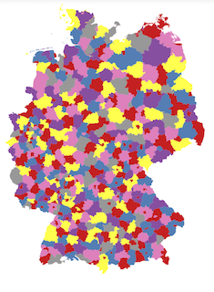
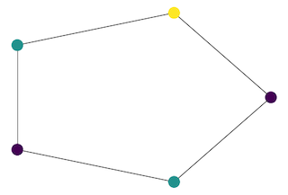

Introduction¶
Many optimisation problems on graphs can be solved by integer linear programming (ILP). The following sketch gives an overview of a general approach for translating graph problems to integer linear programs:

In this documentation, we will consistently use the following notation to describe our linear programs:
\(x_{v}\) |
Binary node variables: indicator whether node \(v\) is part of the solution |
\(x_{uv}\) |
Binary edge variables: indicator whether edge \((u, v)\) is part of the solution (depending on the problem, this may encode directed or undirected edges) |
\(w_{uv}\) |
Edge weights: usually from the problem instance, can be any number |
\(\ell_v\) |
Node labels: often used to set up the problem formulation |
GraphILP aims at providing ILP formulations for many graph problems and making them easy to use. The general idea is to input a graph, select an optimisation problem, and run an optimiser on it.
We are currently supporting Gurobi as an underlying ILP solver and interfacing through its Python API.
How to use¶
The following figure illustrates the general usage pattern of GraphILP. It consists of creating a problem instance in the form of a graph (or hypergraph), choosing a problem, generating and solving an integer linear programming model for this problem, and finally extracting the solution.
Usage pattern for GraphILP. Methods in red are from GraphILP, blue indicates a method from the Gurobi API.
Examples¶
The best way to get started with GraphILP is through one of our examples:

|
Learn how to use perfect matching in bipartite graphs to find a way to connect n random blue points in the plane to n random orange points without crossings. |
|  |
Colour a map with as few colours as possible such that no two adjacent areas get the same colour. |

|
Find the shortest tree connecting a given set of nodes in a graph. |
|
Transform an image into line art that can be drawn without lifting the pencil. |
|
|  |
A simple example finding the minimal number of colours needed to colour circle graphs such that neighbouring nodes get different colours. |

|
Find how many queens are needed to cover all squares on an \(n\times n\) chessboard. |

|
Use maximum weight cuts for image binarisation. |

|
How many vertex disjoint tetrahedra can you pack in a grid graph? |